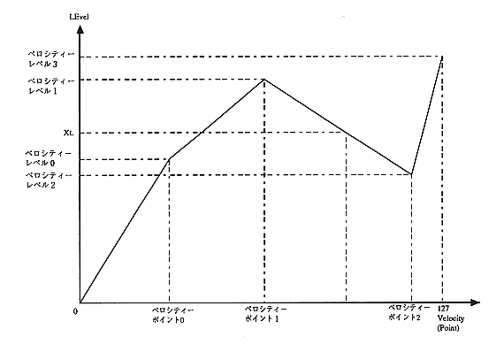

Approximate value: Approximate value table number used for velocity. This value is velocity point 0 ~ 3, It is obtained by calculating the value of velocity levels 0-3.
How to ask

Approximate value 0: Velocity level 0
――――――――――――
Velocity point 0
Approximate value 1: Velocity level 1-Velocity level 0
――――――――――――――――――――――――
Velocity point 1-Velocity point 0
Approximate value 2: Velocity level 2-Velocity level 1
――――――――――――――――――――――――
Velocity point 2-Velocity point 1
Approximate value 3: 127-Velocity level 2
――――――――――――――
127-Velocity Point 2